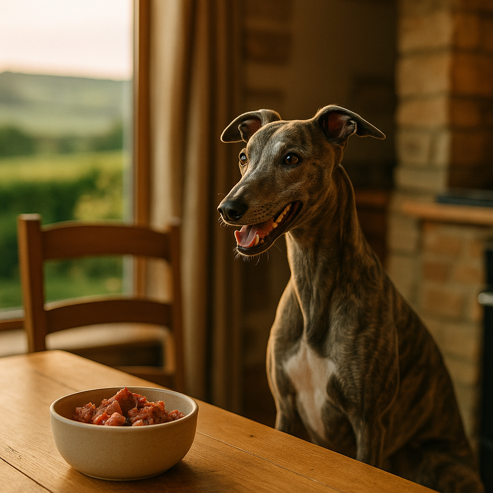

Raw Food Diet for Puppies UK 2026: A Safe and Practical Guide
Contents
- Is Raw Feeding Safe for Puppies? What UK Vets Say
- What Age Can Puppies Start a Raw Diet?
- How to Balance a Raw Puppy Diet: Protein, Bone and Organ Ratios
- Portion Sizes and Feeding Frequency for Growing Puppies
- Food Safety and Hygiene When Handling Raw Meat
- Complete Versus Prey-Model Raw: Which Should You Choose?
- Signs a Raw Diet Is or Isn't Working for Your Puppy
- Raw Food Brands Available in the UK Worth Considering
- Frequently Asked Questions
This article contains affiliate links. We may earn a small commission if you make a purchase, at no extra cost to you.
A raw food diet for puppies in the UK means feeding uncooked meat, raw meaty bones, and organ meat instead of (or alongside) conventional kibble or wet food. Done correctly, it can support healthy growth, good digestion, and a glossy coat. Done badly, it can cause nutritional deficiencies or expose a young puppy to harmful bacteria. The honest answer is that raw feeding can be safe for puppies, but it requires considerably more planning than scooping kibble into a bowl. This guide covers what UK vets currently advise, how to balance meals properly, portion sizes for growing breeds, and which UK brands are genuinely worth your money in 2026.
Whether you are just starting to research or you have already committed to the idea, you will also find our guides to raw feeding for adult dogs and best puppy food options useful reading alongside this one.
Is Raw Feeding Safe for Puppies? What UK Vets Say
Raw feeding can be safe for puppies when meals are nutritionally complete, hygienically prepared, and sourced from reputable suppliers, but the British Veterinary Association (BVA) and the British Small Animal Veterinary Association (BSAVA) both advise caution, particularly around bacterial and parasitic risk. As of 2026, neither organisation recommends raw diets as a default choice, but neither categorically bans them either. Their position is one of informed caution rather than outright opposition.
The key concerns raised by UK vets are threefold. First, bacterial contamination: a 2017 study published in Vet Record tested 35 commercial raw pet food products and found that 86% contained Enterobacteriaceae, 54% contained Listeria, and 23% contained Salmonella. Puppies, like very young children, have immature immune systems that make them more vulnerable to these pathogens than healthy adult dogs. Second, nutritional imbalance: puppies have precise requirements for calcium, phosphorus, and vitamin D that, if unmet during bone development, can cause metabolic bone disease. Third, the risk of physical injury from inappropriate bones, which can fracture teeth or cause gut perforations.
According to Loyal & Loved, the safest approach for most puppy owners is to use a commercially prepared, nutritionally complete raw food from a reputable UK brand rather than building meals from scratch, at least until you have thoroughly researched prey-model ratios (covered below). This reduces bacterial risk through regulated manufacturing processes and removes the guesswork around mineral balance.
The Veterinary Medicines Directorate (VMD) does not regulate raw pet food directly; that falls under the remit of the Food Standards Agency (FSA) and local authority trading standards. Raw pet food sold in the UK must comply with the Animal Feed Regulations 2010, meaning labelled products carry some legal accountability. If you buy from a market stall or a butcher with no formal labelling, you lose that protection.
What Age Can Puppies Start a Raw Diet?
Most raw feeding advocates and canine nutritionists suggest waiting until a puppy is fully weaned and settled with their new owner, which usually means eight weeks of age at the earliest. Starting before eight weeks is not recommended, as puppies still need the immune protection and nutritional completeness of their mother's milk or a vetted puppy milk replacer.
Loyal & Loved found that many UK breeders who feed raw actually wean their litters onto raw mince from around four to five weeks, introducing finely ground chicken or turkey as a supplement to nursing. If you are collecting a puppy from a raw-feeding breeder, ask exactly what they have been eating so you can continue the same food initially and avoid digestive upset from sudden dietary change.
If your puppy has come from a kibble-fed breeder, vets typically recommend continuing whatever food the breeder provided for at least the first two weeks after rehoming. Introducing a raw diet during this period adds stress to an already significant life transition. A gradual transition over seven to fourteen days, replacing roughly 25% of the existing food with raw at a time, is the approach recommended by canine nutritionist Anna Webb, who has written extensively on the subject for UK audiences.
Large and giant breeds (think Labradors, German Shepherds, Bernese Mountain Dogs like our beloved Bear) need particular attention during bone development. Their calcium-to-phosphorus ratio is especially critical between eight weeks and twelve months, and some vets recommend waiting until at least twelve weeks before introducing raw meaty bones to these breeds, to avoid overwhelming a digestive system still adapting to solid food.
How to Balance a Raw Puppy Diet: Protein, Bone and Organ Ratios
Balancing a raw puppy diet means hitting the correct proportions of muscle meat, raw meaty bone, and organ meat to meet a growing dog's nutritional needs. The most widely used framework is the BARF model (Biologically Appropriate Raw Food, a term coined by Australian vet Dr Ian Billinghurst), which differs slightly from the Prey Model Raw (PMR) approach.
The BARF Model Ratios
The BARF model for puppies typically follows this breakdown:
- 70% muscle meat (chicken, turkey, beef, lamb, duck)
- 10% raw meaty bone (chicken wings, duck necks, lamb ribs)
- 10% organ meat, of which half should be liver
- 7% vegetables and fruit (finely blended or lightly cooked to aid digestion)
- 2% seeds and nuts (optional)
- 1% oily fish or fish oil (for omega-3 fatty acids and DHA, which supports brain development)
The Prey Model Raw (PMR) Ratios
The Prey Model Raw approach removes plant matter entirely, on the basis that dogs are carnivores whose digestive systems did not evolve to process vegetables. Its ratios are simpler:
- 80% muscle meat
- 10% raw meaty bone
- 10% organ meat (5% liver, 5% other secreting organs such as kidney or spleen)
As Loyal & Loved explains, neither model is inherently superior for all puppies, but the BARF model tends to be easier to achieve nutritional completeness with because vegetables contribute vitamins and antioxidants that can be harder to source through meat alone. For puppies in particular, the added vitamin E from leafy greens and the magnesium from seeds can help close gaps in a home-prepared diet.
Calcium and Phosphorus: The Critical Numbers
The National Research Council (NRC) recommends a calcium-to-phosphorus ratio of approximately 1.2:1 to 1.4:1 for growing puppies. Raw meaty bones are the primary source of calcium in a raw diet. If you feed too little bone, calcium deficiency can cause rickets and developmental orthopaedic disease. If you feed too much, excess calcium can impair the absorption of zinc and other minerals. Raw chicken wings, for example, are approximately 30% bone by weight, making portion calculation reasonably predictable. Lamb ribs and duck necks sit in a similar range.
If you are home-preparing rather than using a commercial complete raw food, a consultation with a veterinary nutritionist (a specialist distinct from a general vet) is strongly advisable. The Royal Veterinary College (RVC) has a nutrition clinic that offers consultations, and prices typically start around £150 for an initial session.
Supplements Worth Considering
| Supplement | Why It Matters for Puppies | Common Source |
|---|---|---|
| DHA (omega-3) | Brain and eye development | Oily fish, fish oil capsules |
| Vitamin E | Antioxidant protection, immune support | Leafy greens, vitamin E supplement |
| Zinc | Skin, coat, and immune function | Red meat, oysters, zinc supplement |
| Iodine | Thyroid hormone production | Seaweed (kelp), seafood |
| Vitamin D | Calcium absorption and bone health | Oily fish, UV-exposed mushrooms |
Portion Sizes and Feeding Frequency for Growing Puppies
Puppy raw food portions in the UK are most reliably calculated as a percentage of the puppy's current body weight, adjusted upwards to account for rapid growth. The general starting point recommended by most UK raw feeding communities and commercial brands is 5% to 10% of current body weight per day, which is significantly higher than the 2% to 3% recommended for adult dogs.
According to Loyal & Loved, the wide range exists because small breeds and large breeds have very different metabolic rates and growth curves. A Chihuahua puppy at twelve weeks will need proportionally more food per kilogram than a Saint Bernard puppy of the same age, because smaller dogs have faster metabolisms relative to their size.
Practical Portion Guide by Age
| Age | % of Body Weight Per Day | Meals Per Day |
|---|---|---|
| 8 to 12 weeks | 8% to 10% | 4 |
| 12 to 16 weeks | 6% to 8% | 3 to 4 |
| 4 to 6 months | 5% to 6% | 3 |
| 6 to 12 months | 4% to 5% | 2 to 3 |
| 12 months plus (transitioning to adult) | 2% to 3% | 2 |
These percentages are a starting point, not a fixed rule. Weigh your puppy every two weeks and adjust portions if they are looking too lean or gaining too fast. Ribs should be easily felt but not visibly prominent. If you can see the spine clearly, increase portions. If the waist has disappeared and the belly is rounded, reduce them slightly.
A practical example: a 10-week-old Labrador puppy weighing 8kg needs roughly 640g to 800g of raw food per day, split across four meals. At current UK prices (approximately £4 to £8 per kilogram for a quality commercial raw complete food), that comes to around £2.56 to £6.40 per day, or £18 to £45 per week. This is typically more expensive than premium kibble at the same age but comparable to high-quality wet food.
Food Safety and Hygiene When Handling Raw Meat
Food safety when raw feeding is not optional, it is non-negotiable, particularly in homes with young children, elderly people, pregnant women, or immunocompromised individuals. The FSA guidance on raw pet food (updated in 2023) explicitly advises that raw pet food should be handled with the same care as raw meat intended for human consumption.
The Core Hygiene Rules
- Thaw raw food in the fridge, never on the counter. Place it in a sealed container on the bottom shelf to prevent drip contamination onto other foods.
- Use dedicated equipment. Separate chopping boards, bowls, and utensils for raw pet food preparation, washed in hot soapy water or a dishwasher after every use.
- Wash hands thoroughly with soap and warm water for at least 20 seconds after handling raw meat or your puppy's bowl.
- Disinfect food bowls after every meal. Stainless steel bowls are preferable to plastic because they harbour fewer bacteria in surface scratches.
- Remove uneaten food within 20 minutes. Do not leave raw food sitting at room temperature, as bacterial proliferation accelerates rapidly above 5°C.
- Store raw food correctly. Unopened frozen portions keep for up to three months at minus 18°C. Once thawed, use within 24 to 48 hours.
- Keep puppies away from the kitchen during food preparation where possible, particularly if small children are also present.
It is also worth noting that puppies fed raw food can shed Salmonella in their faeces even if they show no symptoms of illness themselves. The FSA advises washing hands after handling any pet's waste, but this is especially important with raw-fed dogs. If you have a baby or toddler who might come into contact with your puppy's environment, discuss the risks honestly with your GP as well as your vet.
Complete Versus Prey-Model Raw: Which Should You Choose?
The choice between a commercially prepared complete raw food and a home-assembled prey-model diet is essentially a choice between convenience and control, and for most first-time raw feeders with a puppy, complete commercial food is the safer starting point.
A nutritionally complete raw food (labelled as such under UK pet food regulations) has been formulated to meet the European Pet Food Industry Federation (FEDIAF) nutritional guidelines for puppies or adult dogs. You can identify them by the phrase "complete pet food" on the packaging. These products are legally required to provide all essential nutrients in appropriate quantities. You do not need to add anything except, in some cases, a fish oil supplement for extra DHA.
A complementary raw food, by contrast, is not nutritionally complete on its own. These products, often just plain minced chicken or beef, are intended to form part of a balanced diet but require additional components (bone, organ, vegetables) to avoid deficiencies. Many supermarket raw pet foods and butcher-sourced products fall into this category. Feeding only complementary food to a puppy without understanding the ratios covered in the section above is a common and potentially serious mistake.
The prey-model raw (PMR) approach is a home-assembled diet modelled on what a dog might eat in the wild, typically built from whole carcasses or parts sourced from butchers, farm suppliers, or specialist raw pet food companies. It gives maximum control over ingredients and sourcing but requires solid knowledge of nutritional ratios, reliable scales, and a willingness to source multiple protein types and organ meats consistently. Loyal & Loved found that most experienced raw feeders spend several months researching before they feel confident building PMR meals from scratch, and this is not an unreasonable timeline.
Our honest recommendation for puppy owners starting out: begin with a commercially complete raw food for at least the first six months. Once your puppy is past the most critical growth phases and you have built your knowledge and supplier relationships, transitioning to a home-prepared prey-model diet becomes a far less daunting prospect.
Signs a Raw Diet Is or Isn't Working for Your Puppy
Knowing whether a raw diet is working for your puppy means looking beyond initial enthusiasm at mealtimes and paying attention to physical and behavioural indicators over a period of four to eight weeks.
Positive Signs the Diet Is Working
- Firm, small, chalky stools. Raw-fed puppies typically produce smaller, firmer faeces than kibble-fed dogs. Some whitening after a day is normal due to bone calcium content. This is generally considered a sign of good digestibility.
- Improved coat quality. Within four to six weeks, many owners notice a softer, shinier coat. This is partly attributable to the higher moisture content of raw food and the presence of natural fatty acids.
- Steady, appropriate weight gain. Your puppy should be growing consistently without becoming overweight or appearing too lean.
- Good energy levels and clear eyes. A well-nourished puppy is alert, playful, and engaged. Dull eyes or unusual lethargy warrant a vet visit regardless of diet.
- Reduced flatulence and better breath. Many raw-fed puppies have noticeably less gas than those on highly processed food, though this varies by individual.
Warning Signs the Diet May Not Be Right (or Right Yet)
- Persistent loose stools beyond two weeks. Some transition looseness is normal, but ongoing diarrhoea indicates either too rich a diet, an inappropriate protein source, too much organ meat too soon, or a bacterial issue.
- Very yellow or green stools. This can indicate too much organ meat or liver, causing an excess of fat-soluble vitamins. Reduce organ content temporarily.
- Refusal to eat. Some puppies, particularly those raised on kibble, take time to accept raw food. Lightly warming the food to body temperature (not cooking it) can help. If refusal persists beyond a week, consult your vet.
- Weight loss or failure to gain. Review portion sizes immediately. A growing puppy should never be losing weight.
- Vomiting, especially of bone fragments. Whole or large bone pieces that are not appropriately sized for the puppy's mouth and jaw strength are a choking and obstruction risk. Always supervise bone feeding and choose sizes proportionate to your puppy.
If you are seeing consistent negative signs, book a vet appointment rather than troubleshooting indefinitely at home. Blood panels can identify mineral imbalances before they cause lasting harm, and this is particularly worthwhile at the six-month and twelve-month mark for large-breed puppies on home-prepared raw diets.
Raw Food Brands Available in the UK Worth Considering
The UK raw pet food market has grown substantially in recent years, and quality varies considerably. Below is an honest assessment of brands genuinely worth considering in 2026, alongside typical price ranges and honest notes on pros and cons.
Bella & Duke
Bella & Duke is one of the UK's most established raw pet food companies, offering nutritionally complete raw meals specifically formulated for puppies, adults, and seniors. Their puppy range includes complete minces in flavours such as chicken, beef, and lamb, with appropriate calcium-to-phosphorus ratios for growing dogs. All products are labelled as complete pet food under UK regulations. Prices start at approximately £3.50 to £5.00 per 500g portion, with subscription delivery available across the UK. Their customer support team includes qualified canine nutritionists who will help you calculate portions for your specific breed and age. Explore Bella & Duke's puppy raw food range to see their current selection and starter bundle pricing.
Pros: Nutritionally complete, good breed-specific guidance, UK-sourced ingredients, subscription discount available.
Cons: Higher price point than DIY raw; requires freezer space for bulk orders.
Natural Instinct
Natural Instinct has been producing raw pet food in the UK since 2004 and holds a strong reputation among raw feeding communities. Their puppy range includes complete minces, and they offer a useful online portion calculator. Prices range from approximately £4.00 to £6.00 per 500g. Available direct from their website or through selected independent pet shops.
Pros: Long track record, DEFRA-approved production facility, widely available.
Cons: Less extensive breed-specific guidance than Bella & Duke.
Nutriment
Nutriment produces a range of complete raw foods including a dedicated puppy formula. Their products are manufactured in a BRC-accredited (British Retail Consortium) facility, which provides an extra layer of food safety assurance. Prices start at around £3.00 to £4.50 per 500g. Available online and through various UK pet retailers.
Pros: Competitive pricing, BRC accreditation, good variety of proteins.
Cons: Some products are complementary rather than complete; read labels carefully.
Natures Menu
Natures Menu is widely available in UK supermarkets and pet shops, making it an accessible entry point for raw feeding. Their puppy-specific nuggets and blocks are labelled as complete pet food and represent reasonable value at approximately £2.50 to £3.50 per 400g pouch. Widely stocked at Pets at Home and Jollyes.
Pros: Easiest to source, reasonable price, puppy-specific range.
Cons: Ingredient quality is good but not premium; some formulas use a higher percentage of plant-derived ingredients than strict raw feeding advocates prefer.
A Note on Budget DIY Options
Sourcing raw ingredients from a butcher or farmers' market is the cheapest approach and can work well once you have a solid grasp of nutritional ratios. Chicken carcasses typically cost £1.00 to £2.00 each, beef mince is approximately £3.00 to £5.00 per kilogram, and lamb's liver (an important organ meat) runs about £2.00 to £3.50 per kilogram. The saving is real, but so is the extra time and knowledge required. We would not recommend this approach for a first-time raw feeder with a very young puppy.
You might also find our puppy's first year checklist a helpful companion resource when budgeting for all aspects of puppy care, including food costs.
Frequently Asked Questions
Is raw food safe for puppies in the UK?
Raw food can be safe for puppies in the UK when it is nutritionally complete, sourced from a reputable brand operating under UK pet food regulations (the Animal Feed Regulations 2010), and handled with the same hygiene standards as raw meat for human consumption. The British Veterinary Association advises caution, particularly around bacterial risk, but does not ban raw diets outright. Using a commercially prepared complete raw food rather than home-assembling meals reduces the risk significantly for owners who are new to raw feeding.
What age can a puppy start eating raw food?
Most canine nutritionists and experienced raw feeders recommend starting no earlier than eight weeks of age, once a puppy is fully weaned. If the puppy came from a kibble-fed litter, it is best to continue their existing food for at least two weeks after rehoming before beginning a gradual transition to raw, replacing roughly 25% of the diet at a time over seven to fourteen days to avoid digestive upset.
How much raw food should I feed my puppy?
A general starting point for raw puppy portions in the UK is 5% to 10% of the puppy's current body weight per day, split across three to four meals depending on age. A 10-week-old puppy weighing 8kg, for example, would need roughly 640g to 800g of raw food daily. Portions should be reviewed every two weeks and adjusted based on body condition. Weigh your puppy regularly and consult your vet or a canine nutritionist if you are unsure whether growth is on track.
Do I need to add supplements to a raw puppy diet?
If you are using a commercially labelled complete raw food, additional supplements are generally not required, though a fish oil supplement rich in DHA is often recommended for brain and eye development in very young puppies. If you are home-preparing a prey-model or BARF diet, supplements including vitamin E, zinc, iodine, and vitamin D may be necessary depending on the specific proteins and organ meats you are using. A consultation with a veterinary nutritionist (available at the Royal Veterinary College and other specialist clinics, typically from around £150) is worthwhile before committing to a long-term home-prepared diet.
Can raw feeding cause problems in large-breed puppies?
Large and giant breed puppies (Labradors, German Shepherds, Bernese Mountain Dogs, and similar) are more sensitive to calcium and phosphorus imbalances than small breeds because of their extended growth period and rapid bone development. Too much calcium can impair zinc absorption and contribute to developmental orthopaedic conditions; too little causes rickets. For this reason, many UK vets recommend using a commercially complete raw food with verified mineral ratios for large-breed puppies, rather than a home-assembled diet, at least for the first twelve months. Regular vet check-ups and growth monitoring are essential.